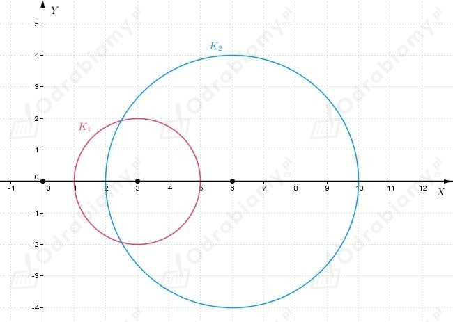
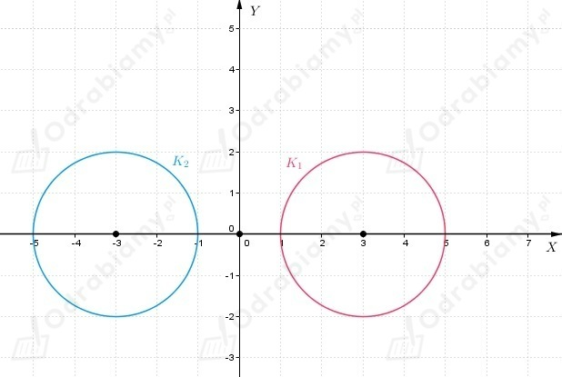
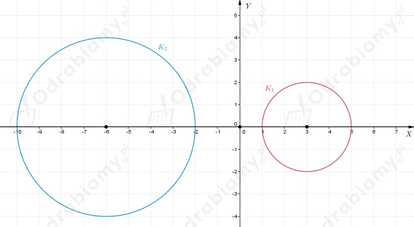
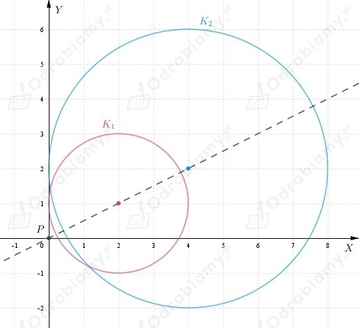
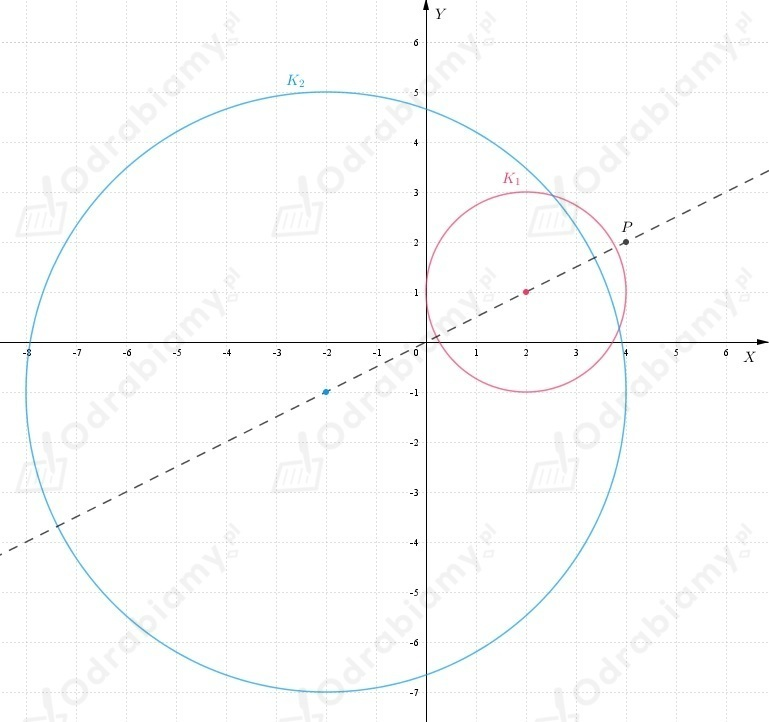
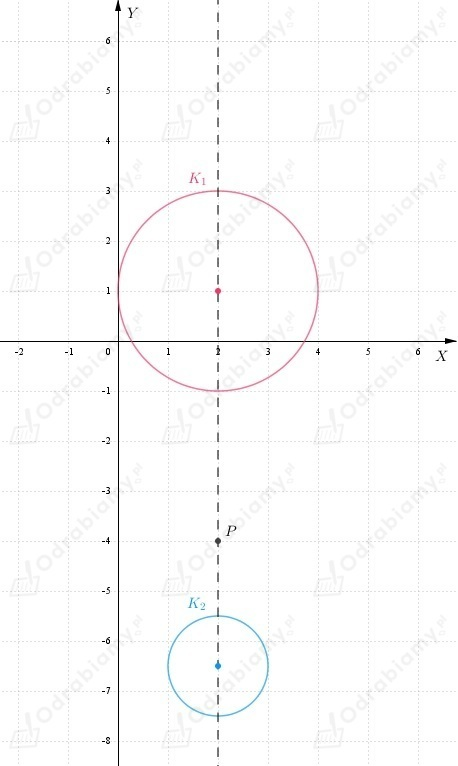

a)
Zatem

b)
Zatem

c)
zatem

Z treści zadania wiemy, że
Odczytujemy, że środek okręgu znajduje się w punkcie (2, 1), natomiast promień
okręgu jest długości 2.
a)
Zauważamy, że skoro mamy jednokładność o środku w punkcie P i skali równej 2, to
środek okręgu K2 znajduje się w punkcie (4, 2), ponieważ jest położony dwa razy
dalej od punktu P niż środek okręgu K1.
Natomiast promień okręgu K2 jest dwa razy dłuższy od promienia okręgu K1, więc jest długości 4.

b)
Zauważamy, że skoro mamy jednokładność o środku w punkcie P i skali równej 3, to
środek okręgu K2 znajduje się w punkcie (-2, -1), ponieważ jest położony trzy razy
dalej od punktu P niż środek okręgu K1.
Natomiast promień okręgu K2 jest trzy razy dłuższy od promienia okręgu K1, więc jest długości 6.

c)
Zauważamy, że skoro mamy jednokładność o środku w punkcie P i skali równej -1/2, to
środek okręgu K2 znajduje się w punkcie (2, -6 1/2), ponieważ jest położony dwa razy
bliżej punktu P niż środek okręgu K1 .
Natomiast promień okręgu K2 jest dwa razy krótszy od promienia okręgu K1, więc jest długości 1.

Przekształcamy równanie okręgu do postaci kanonicznej
Przekształcamy równanie okręgu do postaci kanonicznej
Niech r1 będzie promieniem okręgu K1, a r2 - promieniem okręgu K2.
Z równań okręgów odczytujemy, że
Widzimy, że
Zatem możemy wywnioskować, że
Niech S1 będzie środkiem okręgu K1, a S2 - środkiem okręgu K2.
Z równań okręgów odczytujemy, że
Niech P(x, y) będzie środkiem jednokładności.
Zauważmy, że prosta przechodząca przez punkt S1, S2 i P ma równanie
Zatem możemy zapisać, że
Wyznaczamy współrzędne punktu P.
Wnioskujemy, że
Zatem, jeśli k=-2, to P(0, 0), natomiast jeśli k=2, to P(-4, -4).
Wiemy, że okrąg K1 ma promień długości r1=1.
Okrąg K2 jest obrazem okręgu K1 w jednokładności o środku
w punkcie P(3, -1).
Zatem
Niech r2 będzie promieniem okręgu K2.
Zauważamy, że
Zatem k=3 lub k=-3.
Odczytujemy, że
Możemy zauważyć, że punkty S1, S2 i P leżą na prostej x=3.
Zatem
Środki okręgów oraz punkt P leżą na tej samej prostej, zatem
Dostajemy
Równanie okręgu
Wiemy, że okrąg K1 ma środek w punkcie S1(4, -2) oraz jest styczny do osi OX.
Zatem możemy wywnioskować, że r1=2.
Okrąg K1 został przekształcony przez jednokładność o skali k=-3/2 i środku
w punkcie P, który należy do prostej x+2y=0.
Otrzymany w ten sposób okrąg, to okrąg K2.
Skoro k=-3/2, to promień okręgu K2 ma długość
Punkt P leży na prostej x+2y=0, zatem
wobec tego
Punkty: P, S1 i S2 leżą na tej samej prostej.
Wiemy, że
a)
Okrąg K2 jest styczny do osi OX, czyli
Wobec tego
Równanie okręgu
b)
Okrąg K2 jest styczny do osi Y, czyli
Wobec tego
Równanie okręgu